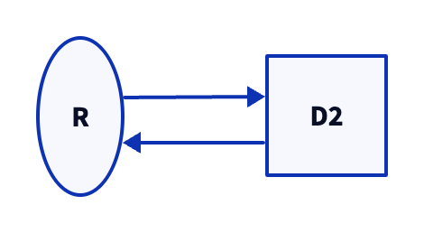

The goal of d2r is to support the creation, reading, writing, and rendering of D2 diagrams using R.
What is D2? From the D2 Introduction:
D2 is a diagram scripting language that turns text to diagrams. It stands for Declarative Diagramming. Declarative, as in, you describe what you want diagrammed, it generates the image.
I am a contributor to the D2 Extension for Quarto and created this package to experiment with the possibilities of native R diagram creation and rendering.
Note that this package is experimental and the process for building and editing D2 diagrams is likely to change. I also hope to add a knitr engine to support d2 code blocks within a RMarkdown or Quarto document.
Installation
You can install the development version of d2r like so:
# pak::pkg_install("elipousson/d2r")Example
library(d2r)
# Helper function for file paths
fig_path <- \(x) {
paste0(knitr::opts_chunk$get("fig.path"), x)
}
options("d2r.pad" = 10)
options("d2r.direction" = "right")If d2 is installed and available on your PATH, you can check the version:
d2_version()
#> ℹ v0.6.3 <https://d2lang.com/releases/0.6.3>If you have D2 installed with Homebrew, you may have trouble rendering a diagram within a RMarkdown. If so, you may need to set an environmental variable that points to the D2 PATH.
Use d2_which() to locate the path for the installed version of D2:
d2_which()
#> [1] "/opt/homebrew/bin/d2"See this 2018 blog post by Tony Tsai on trouble-shooting PATH variable issues for brew-installed commands.
Here is an example of a basic diagram created with d2_diagram():
simple_diagram <- d2_diagram(
c("R" = "D2")
)
simple_diagram
#> [1] "direction: right" "" "R -> D2"
d2_include(
simple_diagram,
fig_path("simple_diagram.png")
)
You can also pass unnamed lines of text with D2 syntax, specify connectors (used with the named elements), and set the overall direction for the diagram:
connected_diagram <- d2_diagram(
c("R" = "D2", "D2" = "R"),
"R.shape: oval",
"D2.shape: square",
connector = "->"
)
connected_diagram
#> [1] "direction: right" "" "R -> D2" "D2 -> R"
#> [5] "R.shape: oval" "D2.shape: square"
d2_include(
connected_diagram,
fig_path("connected_diagram.png")
)
The entity-relationship diagrams and table schema can be represented using the SQL table style diagrams with d2_sql_table():
mtcars_tbl <- d2_sql_table(mtcars[, 1:4], .id = "mtcars")
mtcars_tbl
#> [1] "mtcars: {\n shape: sql_table\n mpg: dbl\n cyl: dbl\n disp: dbl\n hp: dbl\n}"
d2_include(mtcars_tbl, output = fig_path("mtcars.png"), pad = 10)
You can use d2_render() to convert a D2 file into a PNG, SVG, PDF, or GIF file. d2_include() is a wrapper for knitr::include_graphics() that helps to include a diagram in a Quarto or R Markdown document:
diagram <- d2_diagram(
c("Beginning" = "Middle",
"Middle" = "End",
"End" = "Beginning"),
"Beginning.shape: circle",
"End.shape: square",
direction = "right"
)
diagram
#> [1] "direction: right" ""
#> [3] "Beginning -> Middle" "Middle -> End"
#> [5] "End -> Beginning" "Beginning.shape: circle"
#> [7] "End.shape: square"
d2_include(
diagram,
output = fig_path("include-example.png"),
sketch = TRUE,
theme = "Terminal"
)